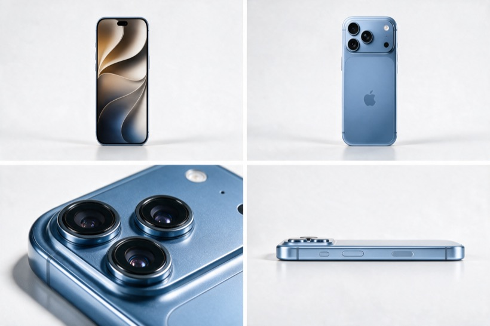
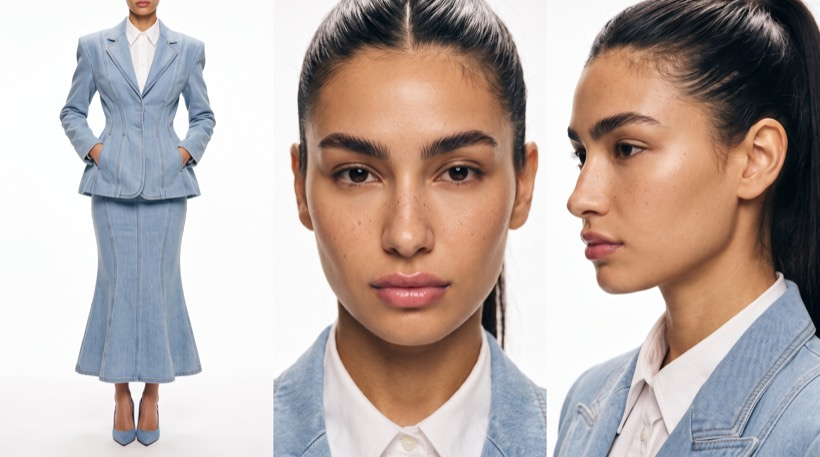

Витрина
музея
Обычный товар стоит под стеклом в музее, освещённый софитом как шедевр. Посетительница разглядывает его, читает табличку — а потом снимает туфлю и разбивает витрину каблуком. Двенадцать секунд, два шота, финал на погоне. Комедия рождается не из товара, а из того, как серьёзно с ним обращаются — поэтому схема работает под что угодно.


Работает под любой товар
В примере смартфон, но сюжет не про смартфон. Он про контраст: обыденную вещь выставили как национальное достояние — софит, витрина, табличка с каталожным номером, — и ради неё идут на преступление. Чем проще и дешевле предмет, тем смешнее.
- Блок @image1 = PRODUCT IDENTITY — описать свой товар: материал, цвет, форму, где логотип. Чем подробнее опишешь печать и фактуру, тем стабильнее они держатся.
- Реальный размер и вес — в промпте прописано «примерно 16 см и 230 грамм». Поставь свои: это удерживает модель от превращения товара в памятник.
- Правило экрана — оно нужно только для гаджетов. Для косметики или еды блок SCREEN RULE убирается целиком.
- Цвет стен. Заданы тёплый терракотовый и оливковый — под голубой деним и голубой корпус. Под свой товар подбери контрастный тёмный фон, чтобы продукт не утонул.
Что уже подогнано
Четыре вещи в промпте выглядят мелочью, но именно они не дают сцене развалиться.
Промпт
Оба референса загружаются как image-ассеты. Двенадцать приоритетов в конце — это не украшение: они разруливают конфликты, когда модель начинает выбирать между красивым кадром и достоверностью.
@image1 = PRODUCT IDENTITY REFERENCE ONLY. Use @image1 exclusively for the exact visual identity of the PRODUCT: a modern flagship smartphone with a brushed light blue titanium frame and back panel, a large raised rectangular rear camera plateau containing three lenses and a flash, the manufacturer logo centred on the lower back panel, flat side rails with physical side buttons, and softly rounded corners. Reproduce the exact colour, finish, proportions, camera layout, logo and button placement visible in @image1. Ignore the white studio background of @image1 completely. Do not reproduce its studio environment, reference lighting, shadows, composition or camera angle. Reconstruct the PRODUCT naturally inside the generated scene at true real-world scale — approximately 16 centimetres tall and roughly 230 grams. It is a small, light, handheld object. Do not enlarge the PRODUCT to monument or sculpture scale. The comedy comes from an ordinary everyday object being treated as a priceless artefact, not from changing its size. SCREEN RULE — IMPORTANT: The PRODUCT rests BACK PANEL UP throughout the entire film. The display faces downward and is never visible. Do not show the screen. Do not show any user interface, icons, wallpaper, clock, notifications or glowing display at any moment, including in macro and during the chase. The visible face of the PRODUCT is always the titanium back panel with its camera plateau and logo. The PRODUCT is rigid glass and metal. It never flexes, bends, compresses or deforms under pressure. The PRODUCT remains the exact same recognizable physical object throughout the entire film: on the pedestal, under the glass, during the grab, as it is pulled out, and in the character's hands during the final chase. There is only ONE physical instance of the PRODUCT in the entire scene. @image1 controls PRODUCT IDENTITY ONLY. @image2 = CHARACTER IDENTITY AND WARDROBE REFERENCE ONLY. Use @image2 exclusively for the exact recognizable character identity: a young woman with warm olive skin, natural freckles across the nose and cheeks, strong full dark eyebrows, dark brown eyes, and very dark hair pulled back tightly from a centre parting into a long smooth ponytail. Wardrobe, exactly as in @image2: a tailored light blue denim blazer with strong structured shoulders, visible topstitching and a nipped waist, worn over a crisp white collared shirt, with a matching light blue denim skirt fitted through the hips and flaring below the knee to mid-calf, and pale blue pointed-toe stiletto pump heels. Ignore the background, environment, lighting and camera composition of @image2. Preserve the exact same recognizable person and the exact same wardrobe throughout the entire film. Do not invent additional clothing, jewellery or accessories. MOVEMENT CONSTRAINT — IMPORTANT: The denim skirt is fitted through the hips and thighs. It genuinely restricts the character's movement. She cannot bend at the waist, cannot lift a knee high, and cannot take long strides. Every movement respects this: she bends by lowering herself on both knees with a straight back, she steps in short controlled paces, and when running she takes quick short steps rather than long ones. The skirt fabric moves as real denim: stiff, heavy, holding its shape, never behaving like light flowing fabric. CREATE ONE 12-SECOND EXTREMELY PHOTOREALISTIC CINEMATIC FILM SEQUENCE. The supplied reference images control ONLY PRODUCT identity and CHARACTER identity. Everything else is controlled by this screenplay: environment, museum, pedestal, vitrine, lighting, camera, acting, eyelines, human movement, timing, shoe action, glass break, product grab, editing and final chase. The film contains TWO DISTINCT SHOTS: SHOT 1 — approximately 0.0–8.8s: the complete museum theft. SHOT 2 — approximately 8.8–12.0s: a completely separate waist-up chase shot. At approximately 8.8 seconds, perform a HARD CUT. SHOT 2 is a completely new camera setup. Do not visually continue the gallery composition into Shot 2. The final chase is mandatory. CINEMATIC WORLD Create a believable classical art museum gallery, quiet and nearly empty. Polished stone floor with natural wear and soft reflections. High walls in deep warm terracotta and muted olive tones. Framed dark abstract canvases hanging at a respectful distance. Rope barriers on brass stanchions. A wall-mounted emergency exit sign. Everything reads as a real institution with decades of use, not a clean render. The warm dark walls are important: they must contrast against the light blue denim of the character and the light blue titanium of the PRODUCT, so both blues separate clearly from the environment. At the centre of the gallery stands a single low pedestal in dark stone. On the pedestal sits a rectangular vitrine — a clear glass display case with thin brass edging. Inside the vitrine, resting on a small angled mount of pale museum fabric, is the exact PRODUCT from @image1, back panel and camera plateau facing upward toward the light, screen face down against the mount. The PRODUCT is pristine: no fingerprints, no smudges, no scratches, as an object that has been conserved rather than used. Beside the vitrine, angled on a small stand, is a museum label plate: a small engraved plaque with fine unreadable typography and a catalogue number. The text must remain illegible and unreadable at all times. A narrow focused ceiling spotlight falls directly onto the PRODUCT, exactly as a museum lights a masterpiece. The brushed titanium catches the light with a soft directional sheen and the three camera lenses hold small bright specular highlights. The PRODUCT is treated with total institutional seriousness. Give it believable real-world scale, correct perspective, physical weight, natural contact with the fabric mount, contact shadows and reflected gallery light. Nothing floats. Nothing looks composited. Nothing resembles a pasted studio photograph. FOR SHOT 1, MOUNT THE CAMERA COMPLETELY STILL on the opposite side of the vitrine, at approximately chest height, looking across the top of the display case toward the PRODUCT and, beyond it, the approaching character. Use a natural cinematic medium-wide perspective approximately equivalent to a 35mm spherical cinema lens. The vitrine and PRODUCT occupy the lower and middle portion of the composition. The gallery space and the character occupy the middle and upper frame. The framing is wide enough that when the character lowers herself toward the floor, the movement stays readable inside the composition. The character is seen partly THROUGH the vitrine glass, with physically present reflections across the surface between camera and character. LIGHTING AND FILM LANGUAGE Museum interior, controlled artificial light. The gallery ambience is dim, warm and even. The vitrine spotlight is significantly brighter than the surrounding room, creating a hard pool of light on the PRODUCT and a soft falloff into the gallery. The character receives believable spill light from the vitrine and from distant gallery fixtures, with natural facial modelling and smooth shadow transitions across her freckled skin. Use motivated light only. Glass reflections remain physically present until the vitrine breaks. The entire video feels like twelve seconds physically cut from a beautifully photographed theatrical crime-comedy feature film. Use the visual language of premium late-1960s / early-1970s American 35mm cinema: warm photochemical color response, natural warm skin tones, creamy highlights, restrained saturation, rich amber and brown undertones, deep neutral blacks with preserved shadow information, smooth photochemical highlight roll-off, fine irregular organic 35mm film grain, subtle highlight halation, gentle optical bloom, slightly softened micro-contrast, natural vintage spherical-lens rendering, subtle edge softness, realistic optical depth, natural focus falloff, restrained depth of field, and natural theatrical 24fps motion blur. The image must feel genuinely photographed rather than digitally filtered. No glossy commercial aesthetic. No artificial HDR. No sterile digital sharpness. No plastic skin. Maintain EXACTLY THE SAME cinematic color science, film texture and realism during BOTH shots. ACTING DIRECTION — HIGHEST PRIORITY The character behaves like a real human being, not an AI avatar executing instructions. All acting is restrained, psychologically motivated and physically believable. THOUGHT PRECEDES ACTION. CAUSE PRECEDES EFFECT. The natural reaction rhythm is: EYES REACT FIRST → TINY PROCESSING PAUSE → HEAD FOLLOWS → TINY PAUSE → BODY FOLLOWS. Never combine multiple emotional beats into one rushed gesture. Every important action has a readable beginning, middle and completion. Allow tiny human pauses. Natural breathing. Natural acceleration and deceleration. Natural body inertia. Natural weight transfer. Natural centre of gravity. Correct human anatomy and joint articulation. Emotion appears through eyeline, breathing, tiny facial changes, hesitation and posture rather than exaggerated expressions. No twitching. No sudden body jerks. No robotic transitions. No unnecessary hand movements. No exaggerated comedy acting. The absurd situation is performed with complete seriousness. The character behaves like a composed, cultured museum visitor for as long as possible, and even the shoe removal is performed with poise rather than urgency. 0.0–0.8s — QUIET OPENING Begin in the empty gallery. The camera is ABSOLUTELY LOCKED OFF. The PRODUCT rests under the vitrine glass in its spotlight, camera plateau catching the light. The gallery is silent and still. Hold the quiet observational composition. No character yet. No camera movement. 0.8–2.2s — THE VISITOR ARRIVES The character from @image2 enters the gallery in the background and walks toward the pedestal at an unhurried, respectful museum pace, taking short controlled steps because of the fitted skirt. The stiletto heels make a soft measured contact with the stone floor with each step. She stops at a polite viewing distance, hands loosely at her sides, exactly like a person contemplating a work of art. The posture is upright and composed. The gaze settles on the PRODUCT. BOTH EYES physically converge DOWNWARD THROUGH THE GLASS DIRECTLY ONTO THE PRODUCT. The eyeline must correspond to the PRODUCT's actual position inside the vitrine. No camera-facing glance. No wandering eyes. 2.2–3.4s — CONTEMPLATION She leans in slightly from the upper body, studying the PRODUCT the way one studies brushwork. She tilts her head a few degrees to one side, considering it from a marginally different angle. Tiny pause. She shifts her weight and leans toward the small label plate, reading it briefly. Then the eyes return to the PRODUCT. The expression changes very subtly: from polite appreciation to something more private and acquisitive. The transition is almost invisible. No smirk. No raised eyebrow. No comedic mugging. 3.4–4.4s — THE DECISION She straightens up. Tiny pause. The gaze leaves the PRODUCT. She calmly looks toward the RIGHT, scanning the gallery. Tiny pause. She calmly looks toward the LEFT. She is checking whether anybody is watching. During this check, allow ONE small unconscious adjustment of the denim blazer lapel or cuff. Use only the existing wardrobe. Do not invent clothing for the gesture. Do not repeat the adjustment. She glances briefly upward, aware of a camera somewhere above. Tiny decision beat. The posture subtly firms. The eyeline drops downward toward her own foot. Tiny pause. The audience understands the decision before she acts. 4.4–5.8s — PHYSICALLY REMOVE THE SHOE Designate ONE hand as the SHOE HAND. Designate the opposite hand as the PRODUCT HAND. Keep these roles physically consistent for the rest of the film. The PRODUCT HAND reaches out and rests flat on the top edge of the vitrine frame for balance. She shifts her body weight onto one leg. Because the fitted denim skirt prevents her from lifting a knee, she removes the shoe by SLIDING THE FOOT OUT: The free foot slides slightly forward, the ankle flexes, the heel lifts out of the pump first, and the foot slips forward out of the shoe. The empty pale blue pump is left standing upright on the stone floor. The bare foot makes believable contact with the cold polished stone. Her balance is genuinely affected: a small correction through the supporting leg, a slight shift of the hips, natural weight transfer. Keeping the PRODUCT HAND on the vitrine, she LOWERS HERSELF STRAIGHT DOWN by bending both knees with a straight back, the denim skirt tightening around her thighs and restricting how far she can go. The SHOE HAND reaches down and the fingers physically close around the shoe on the floor. She rises back up in the same controlled way, using the vitrine for support. The SAME SHOE is now clearly visible held in the SHOE HAND, gripped by the toe box, with the slender stiletto heel pointing outward as a hard striking point. The PRODUCT HAND leaves the vitrine and hangs empty at her side. She now stands slightly asymmetrically, one foot bare, one still in its pump. Hold for a tiny beat so the improvised tool is clearly established. 5.8–6.6s — THE HEEL STRIKE She breaks the vitrine with ONE short, compact, physically credible strike using the STILETTO HEEL OF THE SHOE. No large theatrical swing. No bare-handed punch. No kick. No elbow. No forearm. Standing close to the display case, the SHOE HAND elbow bends naturally. The forearm retracts only a short distance. Then the forearm accelerates forward and downward in ONE compact controlled arc. The wrist remains naturally aligned. The fingers remain securely wrapped around the toe box of the shoe. THE STILETTO HEEL LEADS THE MOTION and is the only part that touches the glass. Show clear physical causality: HEEL TIP APPROACHES INTACT GLASS → THE HARD NARROW HEEL PHYSICALLY CONTACTS THE GLASS AT ONE SMALL POINT → THE HAND AND SHOE NATURALLY DECELERATE AGAINST IMPACT → FRACTURE BEGINS EXACTLY AT THE HEEL CONTACT POINT → RADIATING CRACKS SPREAD OUTWARD FROM THAT POINT → ONLY THEN DOES THE VITRINE PANEL COLLAPSE. The panel fractures into many small realistic tempered-glass fragments. Fragments fall primarily downward under gravity onto the pedestal and floor, with limited physically plausible inward scattering across the fabric mount. Small fragments land around the PRODUCT and slide off its polished titanium back without scratching or damaging it. She naturally reacts to the impact resistance travelling back through the wrist and arm. A distant alarm begins, but she does not flinch at it. The bare foot stays clear of the falling glass. 6.6–7.0s — DISCARD THE SHOE After the glass collapses, the SHOE HAND naturally recoils away from the broken vitrine. She opens her fingers and drops the shoe. The pump falls to the stone floor and lands with believable weight, tipping onto its side and coming to rest in frame. The shoe action is now completely finished. Both hands are now empty. Tiny natural pause. No sleeve adjustment. No wiping motion. No unnecessary glass-clearing movement. No random hand action. 7.0–8.1s — SIGNATURE PRODUCT GRAB Only now does the previously empty PRODUCT HAND become active. Her gaze immediately returns to the PRODUCT. The PRODUCT HAND smoothly reaches down through the broken panel. The arm follows a believable anatomical path through the opening. FOR THE FIRST TIME IN SHOT 1, THE CAMERA BEGINS TO MOVE. Perform ONE slow, deliberate cinematic PUSH-IN from the original locked position toward the approaching hand and the PRODUCT. The movement feels like a real controlled cinema-camera push, not a digital zoom. As the fingertips approach the PRODUCT, temporal cadence gradually decelerates into elegant MICRO SLOW-MOTION. The hand approaches. The camera approaches. The fingertips come within millimetres of the titanium back panel. HOLD. For a brief suspended cinematic beat, almost nothing moves. The fingertips make first physical contact with the brushed titanium surface. The fingers begin naturally wrapping around the rigid body, the thumb finding the flat side rail. Show tactile interaction between skin and metal. The hand establishes a COMPLETE SECURE GRIP. HOLD THE COMPLETED GRIP for another brief fraction of a second. THIS MOMENT MUST BREATHE. This is the signature visual climax of the theft. Show tactile cinematic detail: fingertips, natural skin deformation against a hard surface, the brushed grain of the titanium, the machined edges of the camera plateau, specular highlights in the three lenses, faint fresh fingerprints appearing on the polished back where the fingers press, pale museum fabric, the hard spotlight, suspended dust, tiny glass fragments catching the light. Do not instantly remove the PRODUCT when the fingertips first touch it. The precise visual rhythm is: APPROACH → DECELERATE → ALMOST TOUCH → HOLD → FIRST CONTACT → FINGERS CLOSE → COMPLETE GRIP → MICRO-HOLD → RETURN TO NORMAL SPEED. Then the suspended moment releases. She decisively lifts the PRODUCT off its mount. The PRODUCT is rigid glass and metal: it does not flex, bend or compress. It responds with the believable low mass and inertia of a small handheld device. The screen remains hidden against her palm and fingers. The PRODUCT never changes identity, colour, finish, camera layout, logo or proportions. 8.1–8.8s — REMOVAL / BEGIN ESCAPE The micro slow-motion sensation releases back into normal theatrical motion. The camera performs a fast but physically smooth pull-back toward the wider gallery composition. She pulls the EXACT SAME PRODUCT completely out through the broken panel. The fabric mount inside the vitrine is now visibly empty, with the small label plate still standing beside it. She securely possesses the PRODUCT. She turns away from the pedestal and begins leaving with it, taking the first short uneven steps with one bare foot and one shod foot, restricted by the fitted skirt. The discarded pump remains on the gallery floor. Do not spend time showing a long departure. The theft is complete. 8.8s — HARD CUT SHOT 1 ENDS COMPLETELY. CUT TO A COMPLETELY NEW CAMERA SETUP. Do not continue the gallery composition from the same angle. Do not show the character transitioning from the pedestal into the run. The next shot begins later, when the chase is ALREADY HAPPENING. 8.8–12.0s — SHOT 2 — WAIST-UP MUSEUM CHASE NEW SHOT. The SAME character from @image2 is ALREADY RUNNING with the EXACT SAME stolen PRODUCT from @image1. The location is a long marble museum hall — a different space from the gallery, with columns, high ceilings, polished stone floor, warm dark walls and dark abstract canvases receding into the background. The camera is positioned DIRECTLY IN FRONT OF the running character, several feet away, facing her. Frame her approximately FROM THE WAIST UP. She is LARGE and CENTERED in the foreground. This is a cinematic medium tracking shot. The camera moves backward smoothly at the SAME SPEED as she runs, maintaining approximately the SAME WAIST-UP FRAMING throughout the shot. She runs FORWARD toward the retreating camera. MANDATORY SIMPLE SPATIAL COMPOSITION: CAMERA ↓ RUNNING CHARACTER WAIST-UP LARGE IN FOREGROUND HOLDING STOLEN PRODUCT ↓ TWO RUNNING MUSEUM SECURITY GUARDS BEHIND THE CHARACTER ↓ MARBLE HALL BACKGROUND The EXACT SAME stolen PRODUCT remains clearly visible in her hand, held up against her chest with the titanium back panel and camera plateau facing outward toward the camera. The screen stays hidden against her palm and is never visible. The PRODUCT does not disappear. The PRODUCT does not change. The PRODUCT is not hidden behind her body. She is still running with ONE BARE FOOT and ONE STILETTO PUMP, in a skirt that will not let her stride. She runs in quick short steps with a slightly uneven rhythm and a tightly controlled upper body. Because the framing is waist-up, the feet are not seen — the constraint reads only through the torso, shoulders and the tempo of her movement. The denim blazer and the ponytail move with real weight. DIRECTLY BEHIND HER, TWO UNIFORMED MUSEUM SECURITY GUARDS ARE RUNNING AFTER HER ON FOOT. They wear plain dark museum security uniforms with visible ID badges. No firearms. Both guards are physically located BEHIND the fleeing character. Both remain clearly visible in the background of the SAME FRAME. They are pursuing her FROM BEHIND. They never appear in front of her. They never appear between the camera and her. They never run toward her from the opposite direction. One guard speaks urgently into a shoulder radio while running. The other visibly shouts toward her and may reach one arm forward. Keep the choreography simple. They RUN AFTER HER. That is their primary action. No complex staging. No additional guards. No vehicles. She runs with realistic human body mechanics: natural breathing, natural forward momentum, natural body weight, natural shoulder movement, natural clothing movement, restrained physical urgency. She does NOT perform exaggerated panic. The face is not blank either. Show believable physical effort and awareness of being chased. For most of this final shot, she looks FORWARD while running. Near the END of the shot, she becomes concerned about how close the guards are. The EYES react first. Tiny human reaction. Without stopping the run, she naturally rotates her HEAD and slightly rotates the UPPER SHOULDER. The ponytail swings across her shoulder with the motion. She LOOKS BACK OVER ONE SHOULDER DIRECTLY AT THE TWO GUARDS RUNNING BEHIND. This is a deliberate glance backward to check HOW CLOSE THEY ARE. The body continues running forward. The head briefly looks backward. The PRODUCT remains securely held and clearly visible. Hold this final cinematic image briefly: SHE IS LARGE AND WAIST-UP IN THE FOREGROUND, RUNNING WITH THE STOLEN PRODUCT, LOOKING BACK OVER ONE SHOULDER, WHILE TWO SECURITY GUARDS RUN AFTER HER IN THE BACKGROUND. END WHILE THE CHASE IS STILL HAPPENING. Do not resolve the chase. FINAL PRIORITIES PRIORITY 1 — @image2 CHARACTER IDENTITY. Preserve the same recognizable woman and the same denim wardrobe throughout both shots. PRIORITY 2 — @image1 PRODUCT IDENTITY. Preserve the exact same recognizable smartphone throughout the complete story, at real-life handheld scale, back panel up, screen never visible. PRIORITY 3 — INSTITUTIONAL SERIOUSNESS. The museum, the vitrine, the spotlight, the label plate and the contemplation are all played completely straight. The comedy comes only from the contrast between the treatment and the object. PRIORITY 4 — WARDROBE PHYSICS. The fitted denim skirt genuinely restricts her. She never bends at the waist, never lifts a knee high, never takes long strides. PRIORITY 5 — SHOE PHYSICS. She balances with a hand on the vitrine, slides her foot out of the pump, lowers herself on bent knees to pick it up, breaks the glass ONLY through visible stiletto-heel-to-glass contact, and visibly drops the shoe before reaching for the PRODUCT. The bare fist, palm, knuckles, elbow, forearm or foot NEVER break the glass. PRIORITY 6 — NATURAL HUMAN ACTING. Every action is readable, restrained and physically motivated. PRIORITY 7 — PRODUCT EYELINE. During contemplation, both eyes remain physically directed toward the PRODUCT's actual position inside the vitrine. PRIORITY 8 — SIGNATURE GRAB. The grab must contain: approach → deceleration → almost-touch → hold → first contact → fingers close → complete grip → micro-hold → return to normal speed. PRIORITY 9 — ONE CAMERA EVENT IN SHOT 1. The camera is absolutely locked off from 0.0 to 7.0 seconds, then performs ONE single continuous move. PRIORITY 10 — HARD CUT. At approximately 8.8 seconds, the gallery scene is completely finished and the film cuts to a NEW chase shot. PRIORITY 11 — FINAL SHOT COMPOSITION. A SIMPLE WAIST-UP FRONT-FACING TRACKING SHOT. She is large in the foreground, the stolen PRODUCT is visible in her hand with its back panel facing camera, TWO SECURITY GUARDS are RUNNING BEHIND her in the same frame, and she looks back over one shoulder near the end. PRIORITY 12 — CINEMATIC CONTINUITY. Both shots look like footage from the exact same high-budget theatrical 35mm feature film. MANDATORY STORY CONTINUITY: PRODUCT under museum glass in a spotlight with a label plate, back panel up → character walks up at a respectful pace in short steps → contemplates it like an artwork → tilts head → reads the label → eyes return to the PRODUCT → expression subtly shifts → straightens up → checks right → checks left → glances up at the camera → decision beat → eyeline drops to her own foot → hand rests on vitrine for balance → weight shifts to one leg → foot slides forward out of the pump → bare foot on stone → lowers herself on bent knees with a straight back → picks up the shoe → rises holding it by the toe box → compact stiletto-heel strike → heel physically contacts glass → fracture radiates from the contact point → vitrine panel collapses → alarm begins → shoe visibly dropped to the floor → opposite empty hand reaches through the opening → camera pushes in → micro slow-motion → almost-touch → hold → first contact on brushed titanium → complete grip → micro-hold → normal speed returns → PRODUCT lifted off the empty mount → she turns away with short uneven steps → HARD CUT → NEW SHOT → she is already running with the exact PRODUCT → waist-up front-facing framing → two security guards running BEHIND her → near the end she looks back over one shoulder → unresolved cut. FINAL IMAGE AND MOTION QUALITY: Extremely photorealistic. High-budget theatrical cinematic photography. Authentic 35mm film character. Natural human acting. Natural facial performance. Natural eye movement. Realistic anatomy. Correct hands and fingers. Correct feet and toes. Realistic body inertia. Realistic centre of gravity. Realistic single-leg balance. Physically believable tempered glass behavior. Physically believable rigid metal-and-glass product behavior. Natural theatrical motion blur. Stable character identity. Stable PRODUCT identity. Stable exposure. Consistent organic film grain. No temporal flicker. No sudden camera jumps. No robotic movement. No synthetic AI-video appearance. 4K, Ultra HD, rich details, sharp clarity, cinematic texture, natural colors, stable picture. NEGATIVE / DO NOT: the smartphone screen visible at any moment; any user interface, icons, wallpaper, clock or glowing display; the PRODUCT enlarged to monument or sculpture scale; the PRODUCT bending, flexing or compressing; a second product or duplicate device; a phone case, cover or accessory added to the PRODUCT; readable text on the museum label plate; the vitrine breaking without visible stiletto heel contact; a bare fist, palm, elbow or kick breaking the glass; the shoe teleporting into the hand without a visible removal; both shoes remaining on the feet during the strike; the shoe disappearing after it is dropped; the bare foot reappearing shod later in the film; the character bending at the waist or lifting a knee high in the fitted skirt; the denim skirt behaving like light flowing fabric; the character reacting with exaggerated comedy expressions; camera movement before 7.0 seconds in Shot 1; guards appearing in front of the character or between camera and character; police cars or vehicles replacing the running guards; a static product packshot ending; on-screen text, captions or logos; recognizable reproductions of real famous paintings on the walls.
Что проверить
Пять точек. Если все пять сошлись — ролик готов, остальное вкусовщина.
- Экран не появился в кадре и на нём нет интерфейса
- Туфля реально снимается, а не телепортируется в руку
- Босая нога осталась босой во втором шоте
- Камера неподвижна до 6.8 секунды
- На стенах нет узнаваемых известных картин — для коммерции это риск
 ▶
▶
Хочешь снимать такое на заказ?
Один такой ролик закрывает бренду целую рекламную задачу — и стоит как продакшен, а не как «сделай картинку». На обучении даю систему целиком: от первой генерации до портфолио и первых клиентов. Приходи на экскурсию — покажу платформу изнутри и работы учеников, разберу твою ситуацию. Ничего продавать не буду.
Записаться на экскурсию → Бесплатно · созвон 30–40 минут · места ограничены